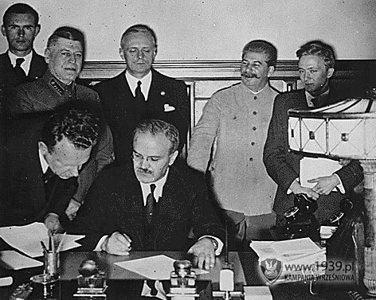
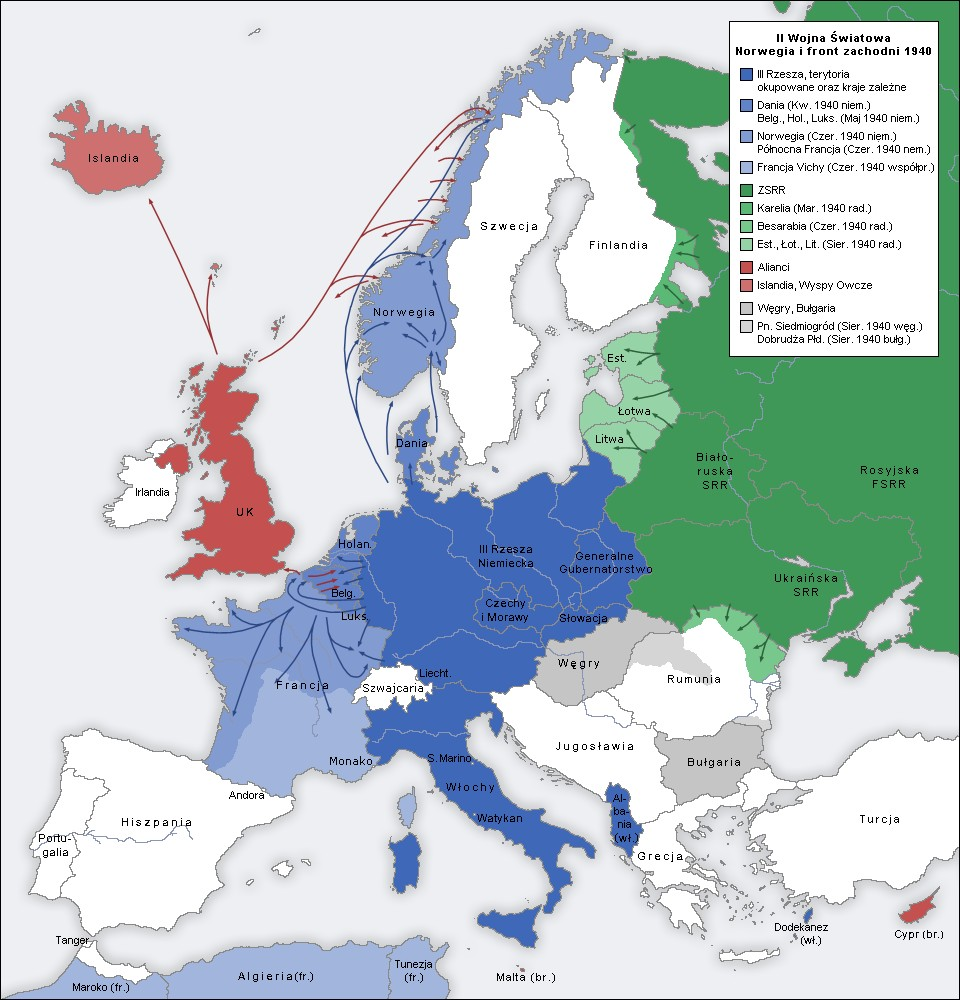
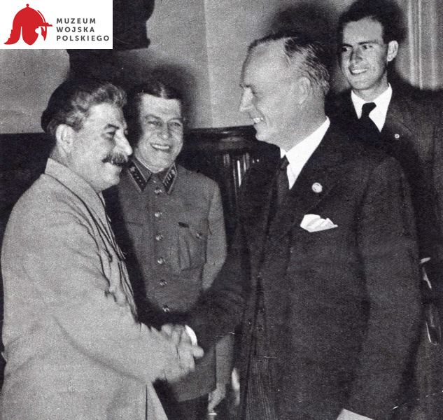
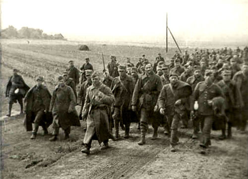
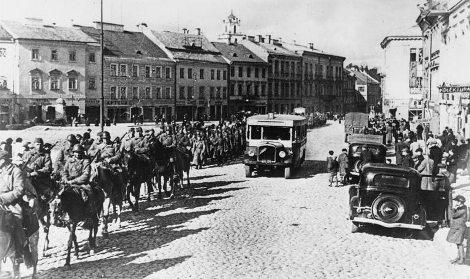
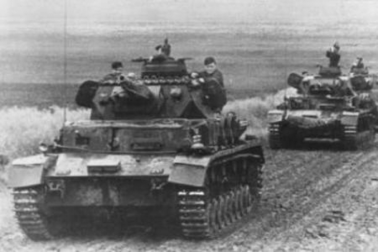
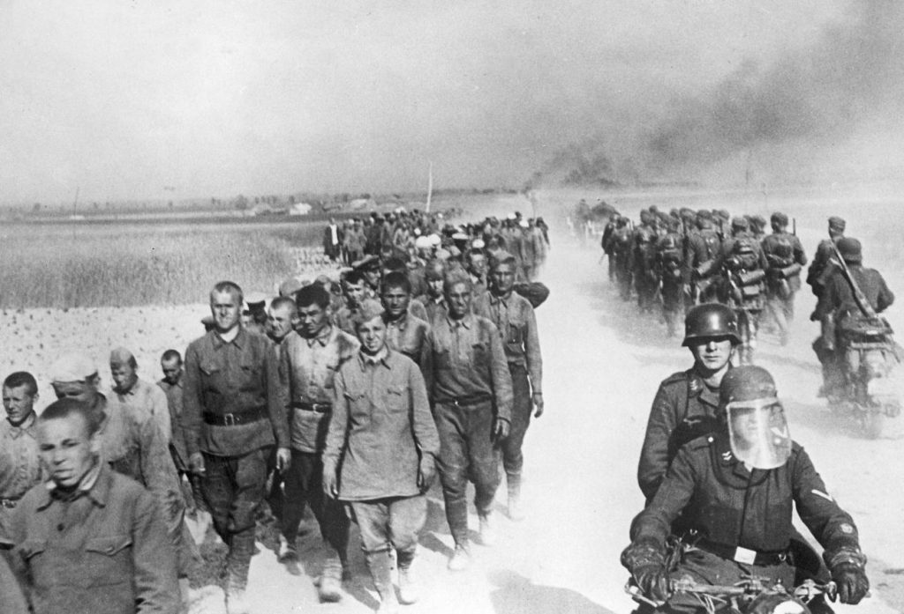

Hitler I Stalin Dzielą Europę
Wprowadzenie
Po wybuchu II wojny światowej, dwa totalitarne reżimy – III Rzesza Adolfa Hitlera i ZSRR Józefa Stalina – zawarły pakt, który zaskoczył wiele krajów i zmienił układ sił w Europie. Pakt Ribbentrop–Mołotow, podpisany 23 sierpnia 1939 roku, umożliwił Niemcom i ZSRR wspólne rozbicie Polski i podział Europy Środkowej i Wschodniej na strefy wpływów, co miało katastrofalne skutki dla wielu narodów.
Pakt Ribbentrop–Mołotow
Pakt o nieagresji między Niemcami a ZSRR, formalnie nazywany „Paktem Ribbentrop–Mołotow”, miał zapewnić Hitlerowi swobodę działania na zachodzie Europy, umożliwiając rozpoczęcie agresji na Polskę. W tajnym protokole dodatkowym do paktu, obie strony podzieliły Europę na swoje strefy wpływów. Zgodnie z umową:
- Niemcy kontrolowały zachodnią część Polski i miały swobodę rozwoju w zachodnich obszarach Europy.
- ZSRR przejął wschodnią część Polski, a także miał możliwość aneksji państw bałtyckich oraz części Finlandii.
 Agresja na Polskę i podział Europy
Po zawarciu paktu, 1 września 1939 roku, Niemcy zaatakowały Polskę, rozpoczynając II wojnę światową. 17 września tego samego roku ZSRR, na mocy tajnego porozumienia, wkroczył na wschodnie tereny Polski, dzieląc kraj pomiędzy siebie a Niemców. Działania te były początkiem brutalnego podziału Europy.
Konsekwencje podziału Europy
Podział Europy przez Hitlera i Stalina miał tragiczne konsekwencje dla krajów tej części kontynentu. Narody Europy Środkowej i Wschodniej, takie jak Polska, Litwa, Łotwa, Estonia, Finlandia, a także Rumunia, znalazły się w zależności od jednej z dwóch potęg. W wyniku paktu:
Złamanie paktu i kontynuacja wojny
Pakt Ribbentrop–Mołotow miał swoją ostateczną datę wygaśnięcia w 1941 roku, kiedy to Adolf Hitler zdecydował się zaatakować ZSRR w operacji „Barbarossa”. Rozpoczęcie niemieckiej inwazji na ZSRR 22 czerwca 1941 roku oznaczało koniec współpracy między Hitlerem a Stalinem, a także otworzyło nowy rozdział w historii wojny, który przyniósł ogromne ofiary i zniszczenia.
 Pamięć i dziedzictwo
Pakt Ribbentrop–Mołotow pozostaje jednym z najbardziej kontrowersyjnych porozumień w historii II wojny światowej. Dla wielu narodów, zwłaszcza Polaków, był to symbol zdrady, a dla narodów bałtyckich i innych krajów podległych ZSRR – początek brutalnej okupacji. Współczesna pamięć o tym wydarzeniu stanowi istotną część refleksji nad historią XX wieku.